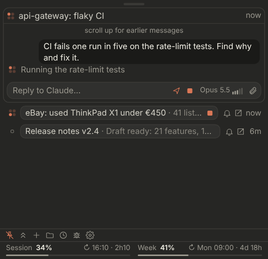

Tray for Claude
Your claude.ai chats and Claude Code sessions next to the Windows clock: status, notifications, replies, one-click steps and usage limits.
Demo

What it does
- All chats in one list: working, waiting for you, new reply, steps to run. Read, reply, stop or retry from the panel.
- Steps in one click: in
/traychats, Claude's commands run from the panel. Say "check" and Claude reads their output. - Questions and permissions: answer Claude Code questions and Allow / Deny prompts.
- Usage limits on the tray icon, with alerts at 80 % and 95 %.
Install
- Download the zip and unzip it, for example to
C:\Tools\ClaudeTray. - Double-click
Start Tray for Claude.cmdand sign in to claude.ai once. - Optional: add
skill/tray.zipas a skill in Claude and start chats with/tray.
Windows 10 (1809+) or 11. No admin rights. Needs a paid Claude plan.